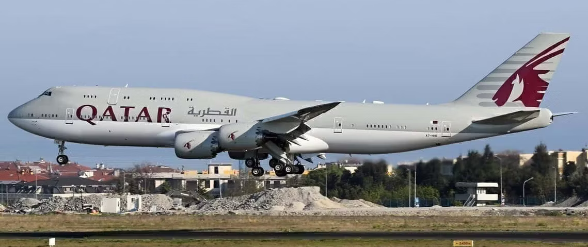
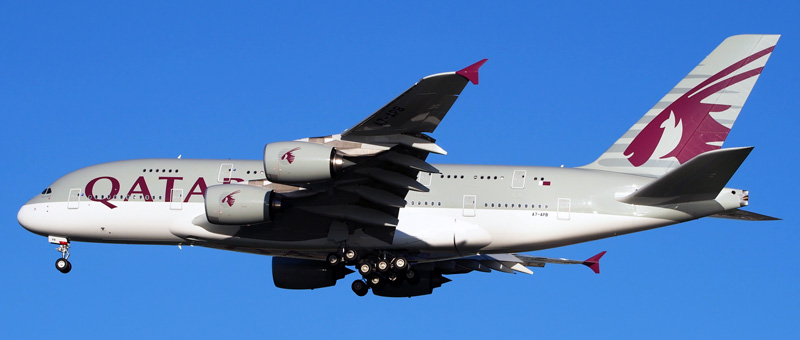
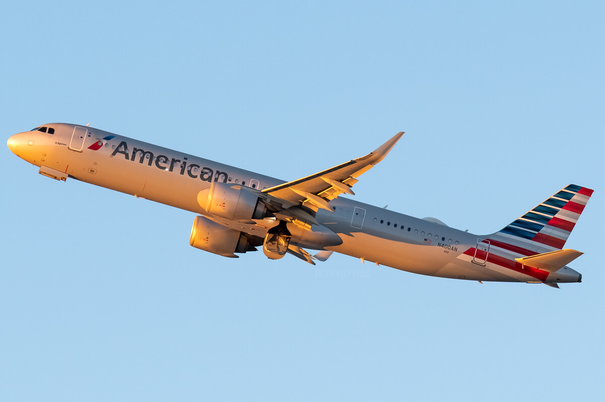

| Welcome to the exciting world of aviation! Have you ever looked up at the sky and wondered which plane is soaring above you? Are you curious about the different types of planes that you see taking off and landing at airports? If so, you're in the right place! Here at our website, we're dedicated to teaching you how to identify the differences between two of the most popular commercial aircraft manufacturers in the world: Airbus and Boeing. Whether you're an aviation enthusiast, a frequent flyer, or simply curious about planes, we've got you covered. | |
|  Photo Credit:Mehmet Mustafa Çelik, Airliners.net |  Photo Credit: Unknown, theflight.info |
| The images above show a Boeing 747(Left) and an Airbus A380(Right). These aircraft fall under the category of four engine wide-body. They are the most recognisable aircraft because of the 747's hump and the A380's full two stories. | |
| The images below are an example of the more difficult to distinguish aircraft. They are the Boeing 757(Left) and the Airbus A321neo(Right). At first glance, these aircraft are identical and even experienced plane spotters have difficulty telling them apart. | |
 Photo Credit: Andrew Solis, jetphotos.com
Photo Credit: Andrew Solis, jetphotos.com
|
 Photo Credit: Ricky Teteris, Jetphotos.com |
|
In conclusion, identifying the differences between Airbus and Boeing planes may seem like a daunting task, but with the right knowledge and guidance, it can be an incredibly rewarding and enjoyable experience. By exploring the unique features and design details of these two iconic brands, you'll gain a deeper understanding and appreciation of the incredible engineering that goes into creating some of the world's most advanced and sophisticated aircraft.
If you are interested and want to know more, there are many resources online that can help, such as this video by Captain Joe on Youtube. |
|